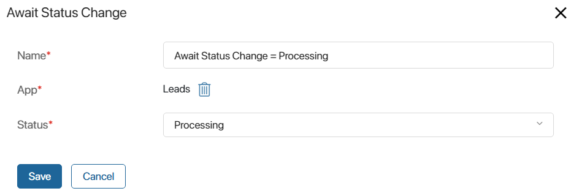
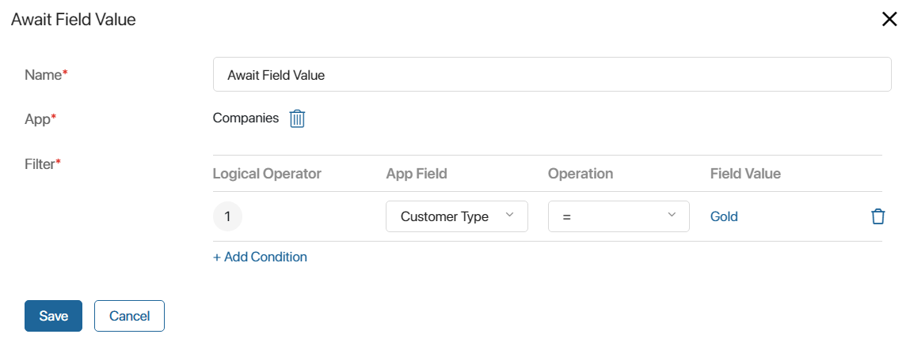
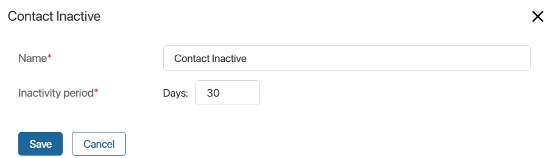
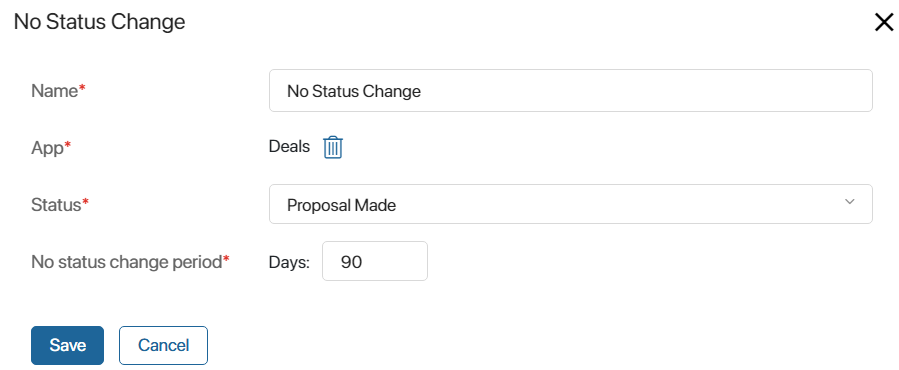
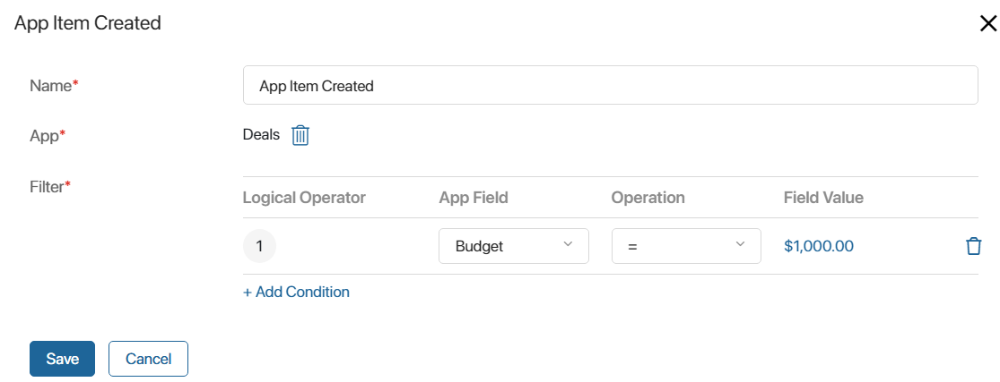

A trigger is used in a customer journey map scenario to initiate a transition to the next step. A trigger is placed after the Segment block and tracks changes in app items where contacts are specified. For example, you can track changes in leads and deals.
The next step of the scenario is executed for a contact if that contact is:
- A subscriber of the segment selected in step 1 of the scenario.
- Specified in an app item that is set in the trigger, and the conditions specified in the trigger are met for that item. The condition check is performed while the map is active and not completed.
You can add multiple triggers to a scenario. The same app has to be specified in their settings. The exception is the Contact Inactive trigger. When you use it, the scenario will be executed for the subscribers defined in the first trigger. In the next trigger, conditions will be checked only for them, etc.
In the trigger settings:
- Specify the name of the block in the scenario.
- Select an app, if there is a corresponding field in the settings, in which changes will be tracked for the next step of the scenario. The apps associated with the Contacts app and specified in the Marketing workspace settings are available for selection.
Other settings depend on the selected trigger.
You can add the following triggers to the scenario:
Await status change
The trigger monitors for a change in the status of an app item. The scenario will continue if:
- The item already has the status specified in the settings.
- The status of the item will change to the specified status while the map is active.

For example, the next step of the scenario will run for a subscriber who is listed in a Leads app item if:
- The item has a Processing status at the time the map is activated.
- The status of the item will change to Processing while the map is active.
For examples of this trigger, see the Invitation to a webinar and Feedback after purchase cases.
Await field value
The trigger monitors for a change in the item property of the app. The scenario will continue if:
- The property already has the value specified in the settings at the time the map is activated.
- The property value changes to the specified value while the map is active.

For example, the next step of the scenario will be executed for the subscriber that is specified in the Company app item if:
- The Customer Type property has a value of Gold at the time the map is activated.
- The value of the Customer Type property changes to Gold while the map is active.
You can specify several app fields in the Filter* option. Then the scenario will move to the next step only if all conditions are met.
For an example of this trigger, see the description of the Golden customer promotion case.
Contact inactive
The trigger tracks the records of a subscriber in the activity log for a specified period. All activities are taken into account, including hidden ones. If there are no records, the scenario will continue.
Please note that if this trigger is placed first in the scenario, you can select any app in the settings of subsequent triggers.

Let’s consider an example. A period of 30 days is set in the trigger. At the moment of map activation:
- For subscriber A, there has been no activity in the last 30 days, so the trigger will run immediately.
- Subscriber B has a call record from 25 days ago, so the trigger will activate in five days and the scenario will continue if the map is active and there are no new activities for the subscriber.
No status change
The trigger tracks the period during which the app item is in the same status. If the status has not changed for the specified time, the scenario will continue.

Let’s consider an example. A period of 90 days is set in the trigger. At the moment of map activation:
- For subscriber A, the Proposal Made status of the deal has not changed for the last 90 days, so the trigger will run immediately.
- For Subscriber B, the status of the deal has changed to Proposal Made 70 days ago, so the trigger will activate in 20 days and the scenario will continue if the map is active and the status of the deal remains the same during this time.
- For subscriber C, the status of the deal has changed to Proposal Made 10 days ago. 20 days after the map activation the status has changed to Qualified, so the trigger will not work for this subscriber.
App item created
The trigger monitors whether a new item has been added to the app with the segment subscriber for which the scenario is configured. If the item is created while the map is active, the scenario will continue.

You can specify several app fields in the Filter* option. Then the scenario will move to the next step only if all conditions are met.
For example, the next step of the scenario will be executed for the subscriber who is specified in the Deals app item with the specified condition, which is created in the period from the map activation to its completion.
Please note that if the app items are imported with the Ignore event handler option enabled, the trigger will not run for them and the scenario will not be executed.
For an example of this trigger, see the Product newsletters case.
Found a typo? Select it and press Ctrl+Enter to send us feedback